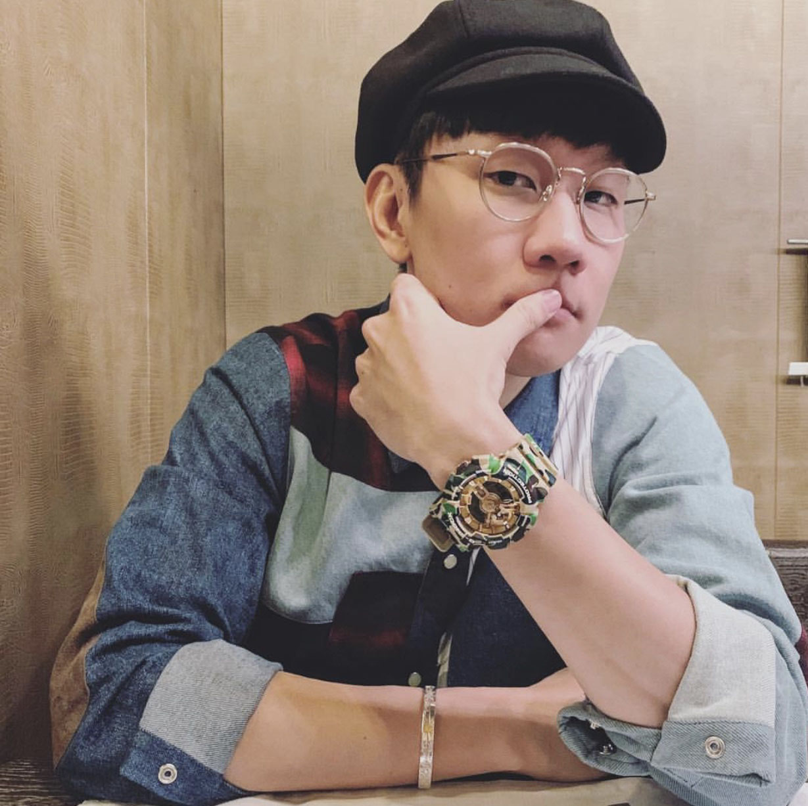

林俊杰
艺名JJ Lin，出生于1981年3月27日，新加坡华语男歌手、词曲作家、音乐制作人
重要事件
- 2003年，发行首张创作专辑《乐行者》
- 2004年，凭借专辑《第二天堂》中《江南》一曲而成名
- 随后的《小酒窝》、《曹操》、《她说》等歌曲亦造成广大回响
- 2014年，他以专辑《因你而在》荣获第25届金曲奖最佳国语男歌手奖
-
2016年，再以专辑《和自己对话》夺得第27届金曲奖最佳国语男歌手奖及演唱类最佳作曲人奖
主要成就
- 2003年，第1届台湾Hito流行音乐奖－第二季Hito十大金曲《翅膀》
-
2004年，第15届金曲奖－最佳新人奖《乐行者》，第4届全球华语歌曲排行榜颁奖典礼－年度二十首金曲奖《江南》
-
2005年，第5届全球华语歌曲排行榜颁奖典礼－年度二十五首金曲奖、最佳专辑奖《编号89757》、最受欢迎创作歌手奖、新加坡最佳杰出艺人奖
-
2006年，第6届全球华语歌曲排行榜颁奖典礼－年度二十首金曲奖《曹操》、最受欢迎创作歌手奖
- 2007年，新加坡金曲奖－最佳本地歌手奖《西界》
- 2008年，第13届新加坡词曲版权协会－最佳本地创作人奖
- 2009年，第15届新加坡金曲奖－最佳本地歌手奖
- 2010年，第10届全球华语歌曲排行榜－年度二十大金曲奖《背对背拥抱》
-
2011年，第1届全球流行音乐金榜－年度最佳制作人奖《她说》、年度最佳创作歌手奖、新加坡电台1003推崇大奖、年度20大金曲奖《第几个100天》
-
2012年，第16届全球华语榜中榜颁奖盛典－台湾最佳男歌手奖、港台最佳创作歌手奖
- 2013年，第8届KKBOX数字音乐风云榜－年度十大风云歌手奖
-
2014年，第09届KKBOX数位音乐风云榜－华语百大专辑奖《因你而在 Stories
Untold》、十大风云歌手奖
- 2015年，第10届KKBOX风云榜－十大风云歌手奖
- 2016年，2016年Mnet亚洲音乐大奖最佳亚洲艺人奖
- 2018年，2018年Mnet亚洲音乐大奖最佳亚洲艺人奖
主要作品
| 年份 |
专辑名 |
| 2003年 |
发布专辑《乐行者》 |
| 2004年 |
发布专辑《第二天堂》 |
| 2005年 |
发布专辑《编号89757》 |
| 2006年 |
发布专辑《曹操》 |
| 2007年 |
发布专辑《西界》 |
| 2008年 |
发布专辑《JJ陆》 |
| 2009年 |
发布专辑《100天》 |
| 2010年 |
发布自选辑《她说》 |
| 2011年 |
发布专辑《学不会》 |
| 2013年 |
发布专辑《因你而在》 |
| 2014年 |
发布专辑《新地球》 |
| 2015年 |
发布专辑《和自己对话》 |
| 2016年 |
发布专辑《伟大的渺小》 |
生活照

生平
1981年，林俊杰出生于音乐世家 1999年被海蝶音乐选中签约开启音乐之路
2001年，作曲《记得》被收录在张惠妹专辑中，此后为庾澄庆、阿杜、王心凌等多人创作主打歌曲
2003年，发行首张创作专辑《乐行者》
2004年，第二张专辑《第二天堂》和主打歌《江南》红遍大江南北
2009年，因胃酸倒流侵蚀声带失声，被迫中止演艺活动，同年12月携专辑《100天》回归
2011年，与海蝶音乐合同到期，加盟华纳唱片
2013年，发行出道十年纪念专辑《因你而在》
2014年，蜡像入驻新加坡杜莎夫人蜡像馆 2016年，加盟《梦想的声音》常驻导师
2019年，为电影《少年的你》创作主题曲《我们很好》
2020年，与孙燕姿合作，为武汉新冠防疫前线创作单曲《Stay with You》